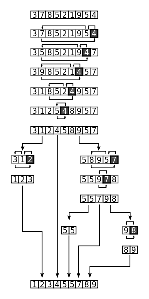

STL Sort
Sort este un algoritm predefinit cu o complexitate la executie asemanatoare quicksort-ului. Daca algoritmii bine-cunoscuti de sortare prezentati
aici au avantajul de a necesita un cod de dimensiuni relativ reduse si dezavantajul unei complexitati ridicate, algoritmii eficienti asemenea quicksort-ului au o implementare dificila.
QUICKSORT

|
Complexitate
- Caz favorabil: O(n);
- Caz nefavorabil: O(n^2);
- Complexitate medie: O(n log n);
|
Codul necesar sortarii recursive unui vector cu n elemente utilizand metoda quicksort este urmatorul:

STL SORT
| 
|
Sortarea din STL are astfel un avantaj urias: dimensiunile reduse ale codului. Utilizat pe vectori, codul presupune doua etape:
- 1. Includerea bibliotecii < algorithm >.
- 2. Scrierea algoritmului: sort(v+1, v+n+1);
Acest algoritm sorteaza vectorul "v" cu "n" elemente in ordine crescatoare, intr-o complexitate O(n log n). |